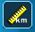
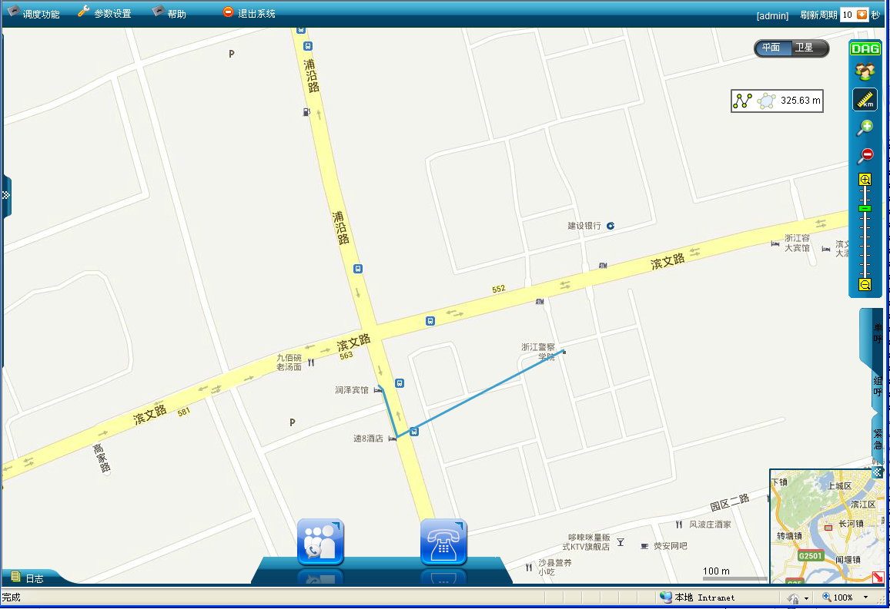
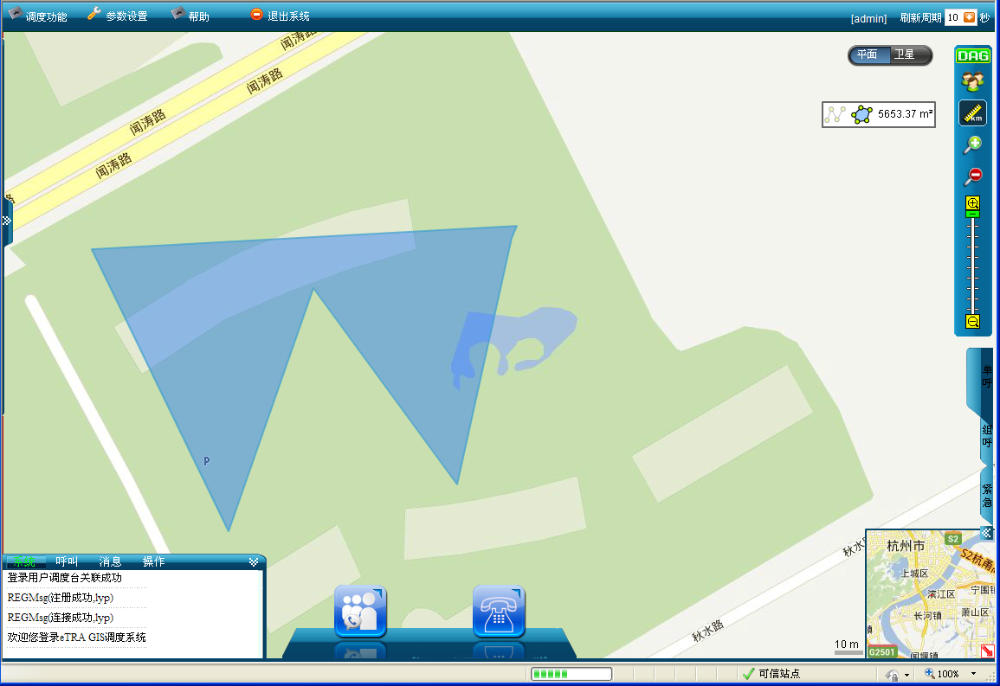

测距包括测直线距离和面积。在地图主界面点击一个点作为测距起始点，依次点击其他点作为测距点。
 测量地图上的直线距离或者面积的步骤如下：
测量地图上的直线距离或者面积的步骤如下：
1）在地图操作工具栏中单击“”测距图标。界面会跳出测距方式选择框“”，在此图标点击左键先选择一个测距方式：点击图标表示测试直线距离，点击图标表示测试面积。
2）在地图上用鼠标左键单击确定测量起点，松开左键测量路线，双击左键结束测量。如下图所示。

直线测距图

面积测距图
3）再单击“”测距图标，关闭地图测距。
 说明：
说明：
测量直线单位为米，面积单位为平方米。
地图的放大与缩小对测距的准确度没有任何影响。
Copyright © 2012 Eastcom, Inc. All rights reserved. |
||